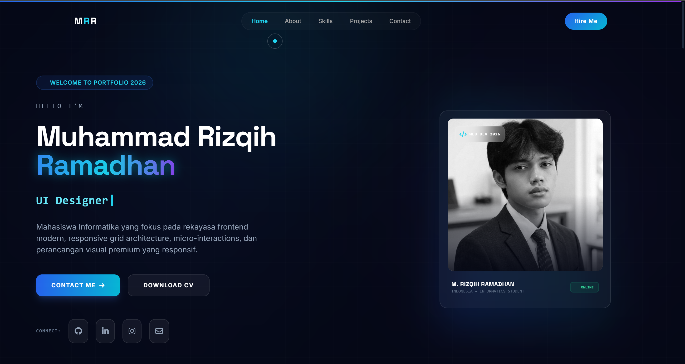
Featured
Website
Portfolio Website
Website portofolio pribadi premium interaktif dengan ambient glow serta modern glassmorphism.
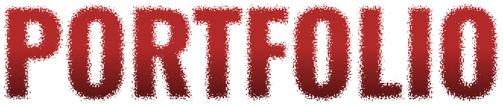
Mahasiswa Informatika fokus pada frontend modern, responsive grid, micro-interactions, dan UI premium responsif.
DOWNLOAD CV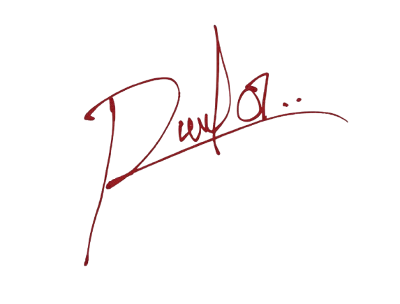
Saya adalah mahasiswa Informatika di Universitas Bina Sarana Informatika yang memiliki minat tinggi dan pengalaman praktis dalam rekayasa frontend, pembuatan website modern responsif, UI/UX design, dan implementasi teknologi web terkini. Saya berkomitmen penuh untuk terus beradaptasi dengan tren industri dan berkontribusi secara nyata di dunia teknologi informasi.
Interactive and modern apps
Competency verified badges
Kumpulan teknologi dasar dan lanjutan yang saya gunakan untuk mengimplementasikan solusi visual interaktif dan andal.
Galeri karya pilihan mencakup sistem antarmuka web, integrasi database, hingga sertifikasi kompetensi resmi.

FeaturedWebsite portofolio pribadi premium interaktif dengan ambient glow serta modern glassmorphism.
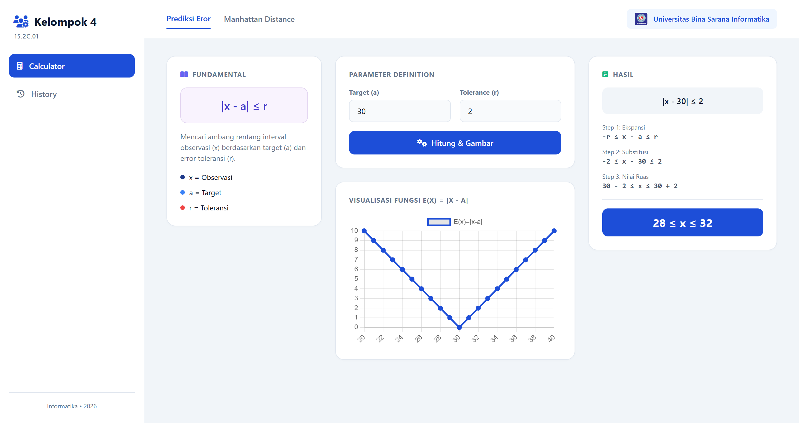
FeaturedAplikasi kalkulator interaktif dengan antarmuka bersih dan tema visual modern.
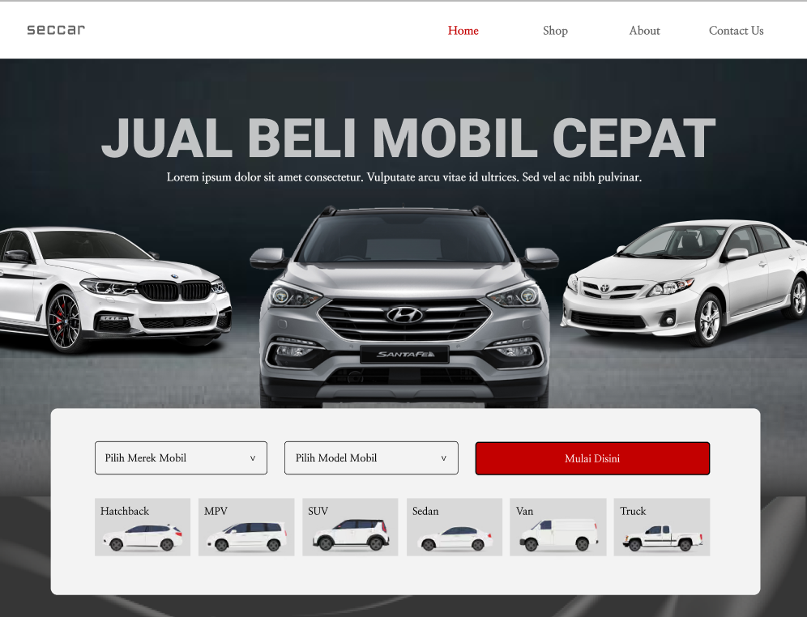
UI/UXWebsite car marketplace dirancang sebagai platform jual beli mobil dengan fitur lengkap.
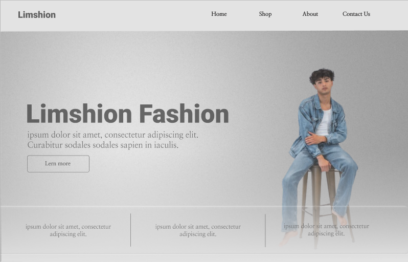
UI/UXSitus web Limshion menampilkan desain yang bersih, modern, dan elegan bagi merek fesyen.
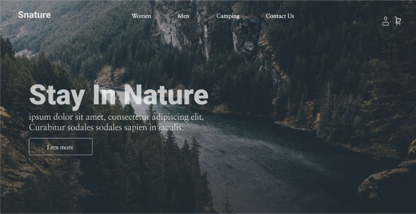
UI/UXSitus web Santure ini dirancang dengan tampilan modern dan navigasi outdoor yang praktis.
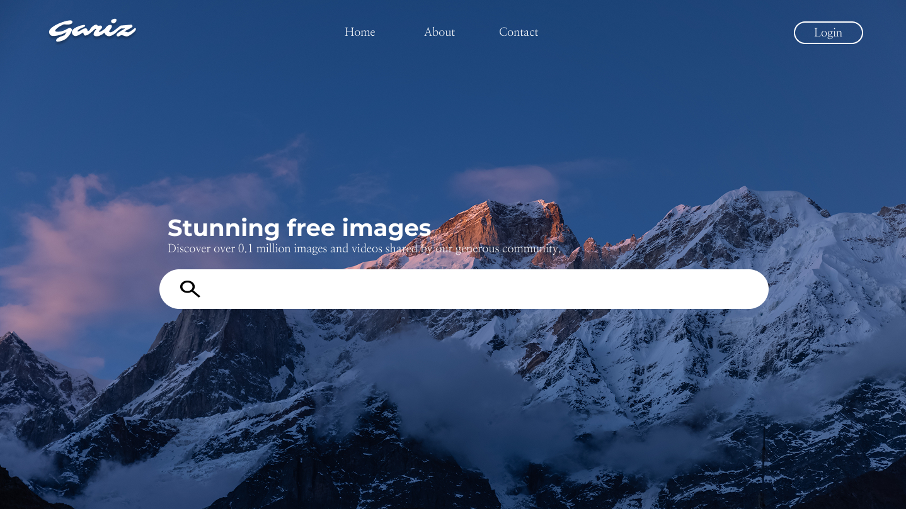
UI/UXMenampilkan halaman utama website galeri foto dengan eksplorasi tata letak modern.
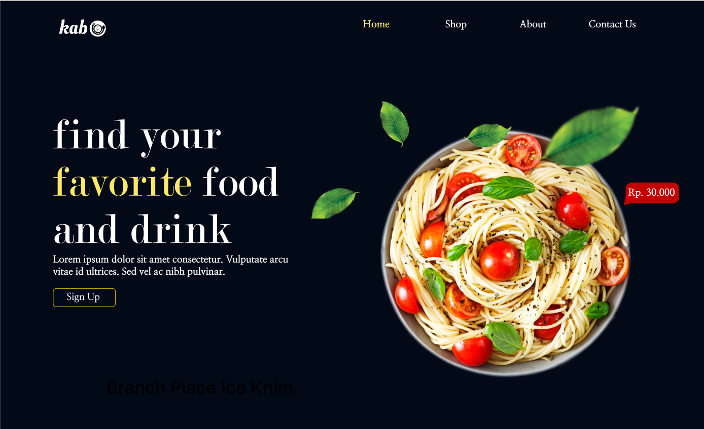
UI/UXWebsite food ini menampilkan desain modern dengan tema elegan yang fokus pada visual kuliner.
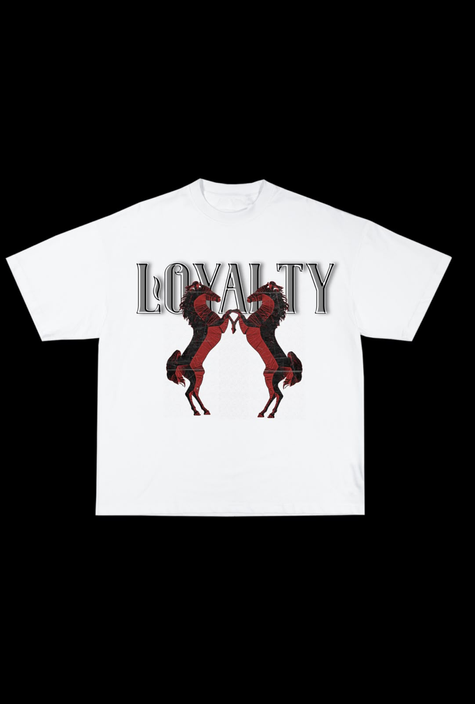
DesignDesain kaos ini menggunakan konsep simpel dan elegan dengan dominasi warna putih sebagai dasar.
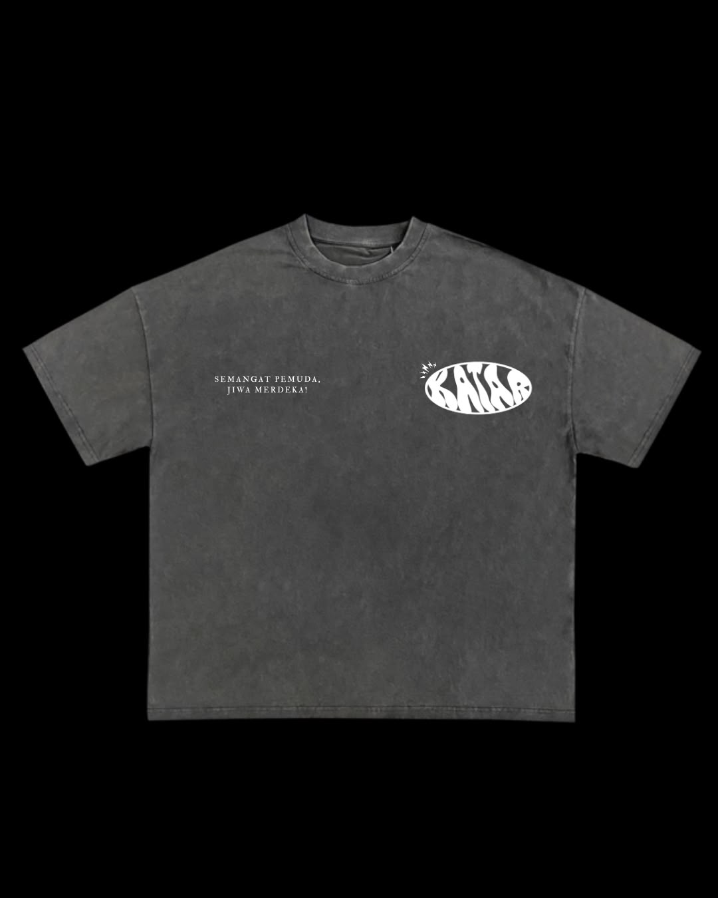
DesignDesain kaos ini mengusung konsep sederhana dan modern dengan warna dasar abu-abu yang memberikan kesan netral dan stylish.
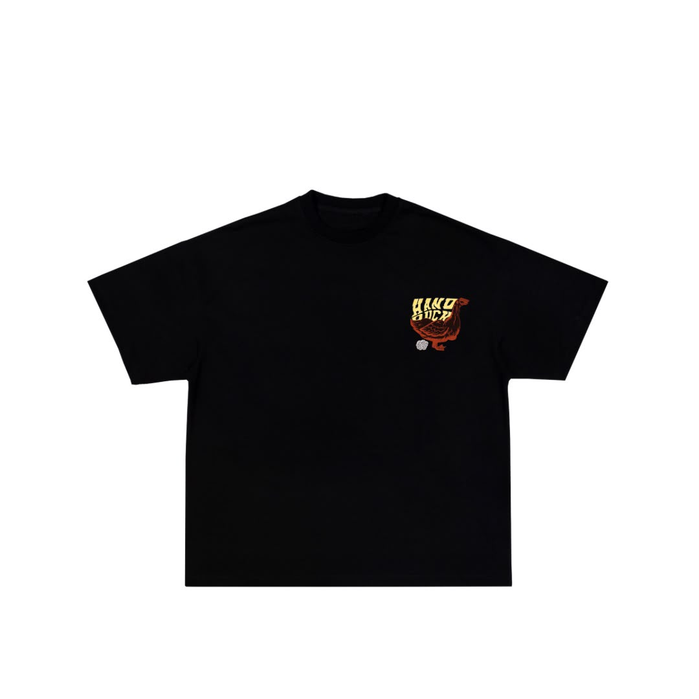
DesignDesain kaos ini menggunakan konsep unik dan kreatif dengan ilustrasi tangan yang dibentuk menyerupai bebek sebagai elemen utama.
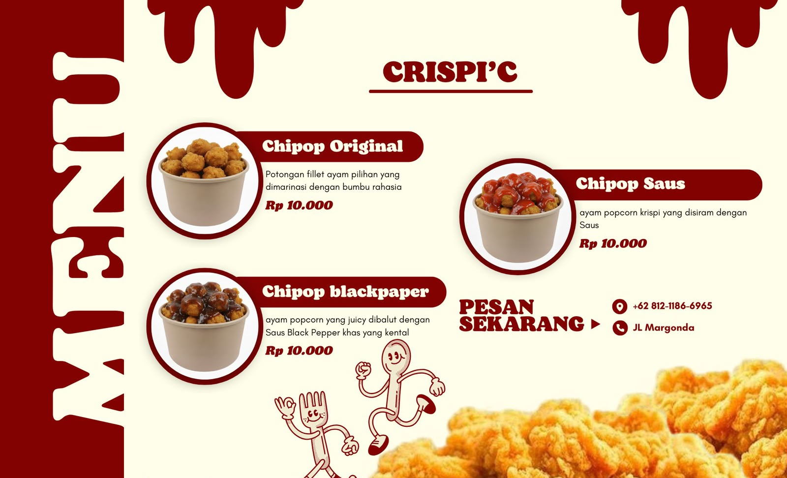
DesignDesain ini menggunakan tampilan sederhana dengan warna merah dan krem yang menarik. Informasi menu disusun rapi sehingga mudah dibaca
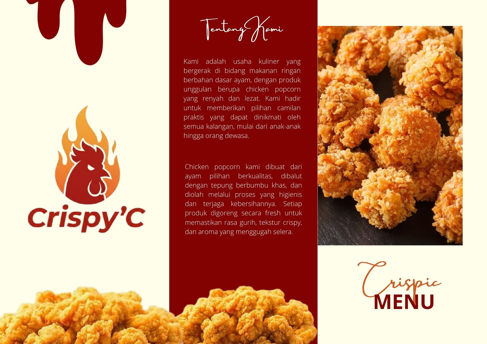
DesignDesain ini menggunakan konsep sederhana dan modern dengan dominasi warna merah, krem, dan putih yang memberikan kesan hangat serta menggugah selera.
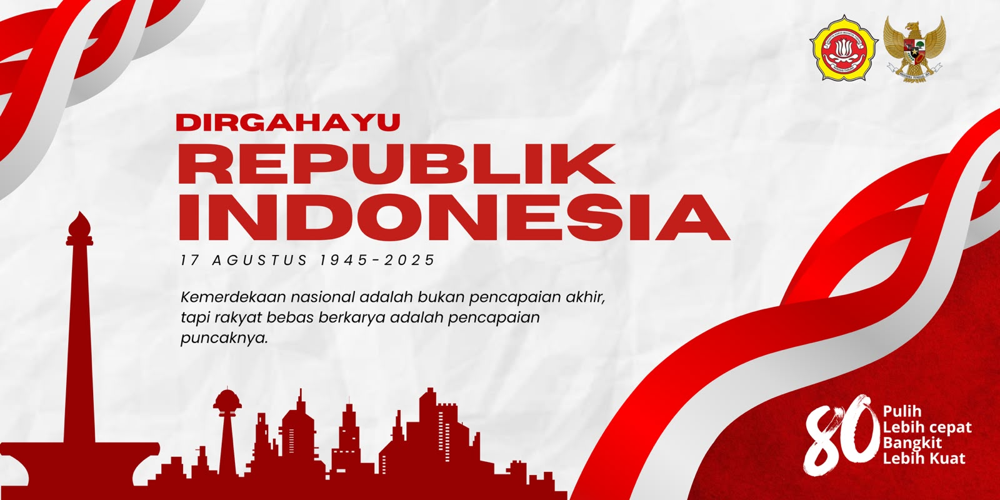
DesignDesain poster ini menggunakan konsep sederhana dan formal dengan dominasi warna merah dan putih yang mencerminkan semangat nasionalisme
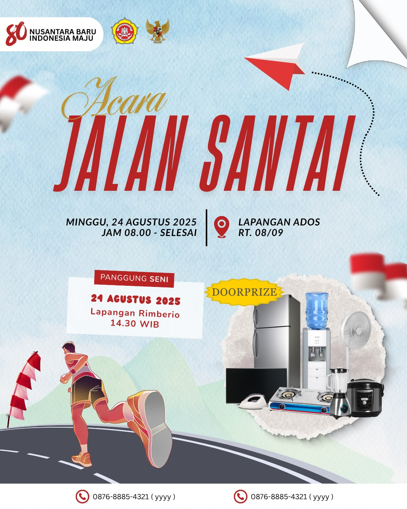
DesignDesain poster ini dibuat dengan konsep sederhana namun tetap formal, menggunakan kombinasi warna merah dan putih yang mencerminkan identitas nasional.
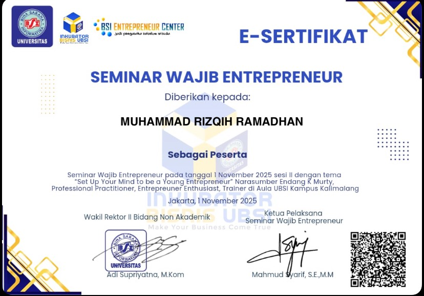
CertificateSertifikat Entrepreneur mencakup pemahaman dasar wirausaha & manajemen bisnis.
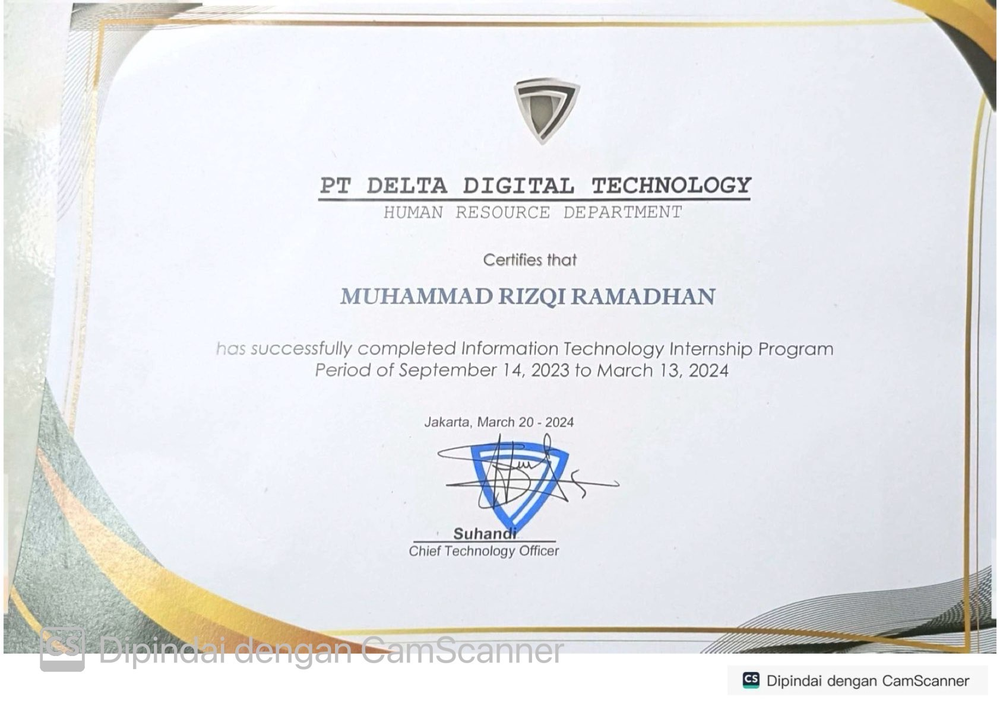
CertificateSertifikat magang dari PT. Delta Digital Teknologi bidang IT & Software Development.
Siap mendiskusikan ide proyek web modern Anda, antarmuka UI/UX, atau kolaborasi profesional lainnya.